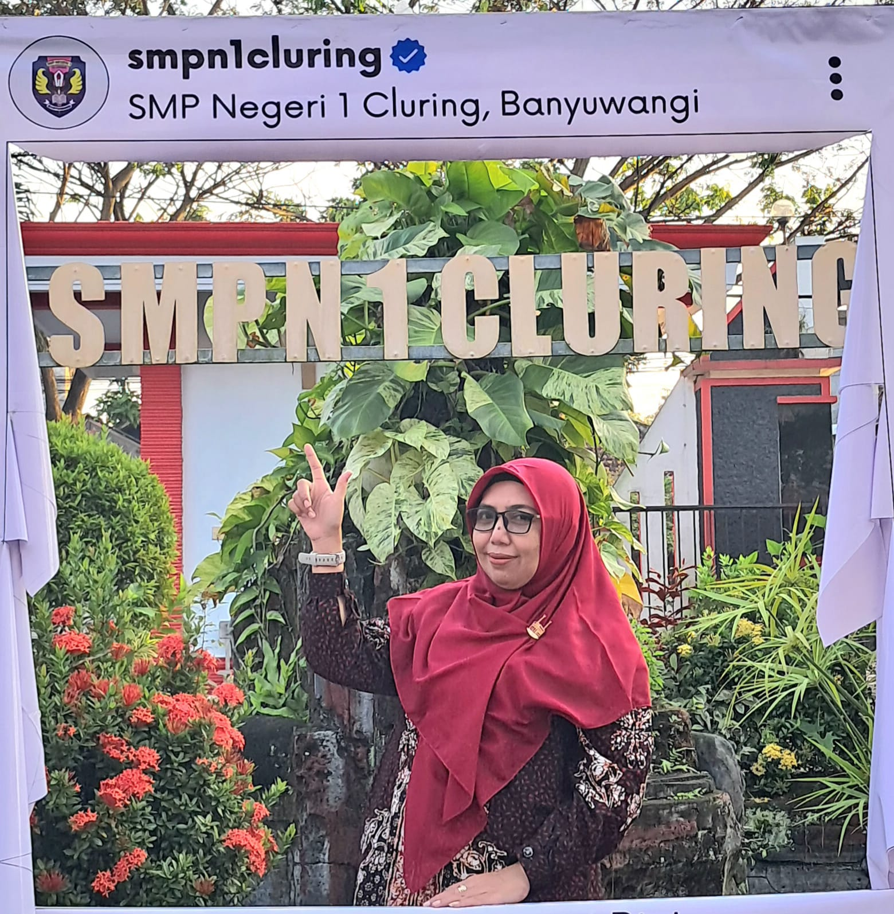
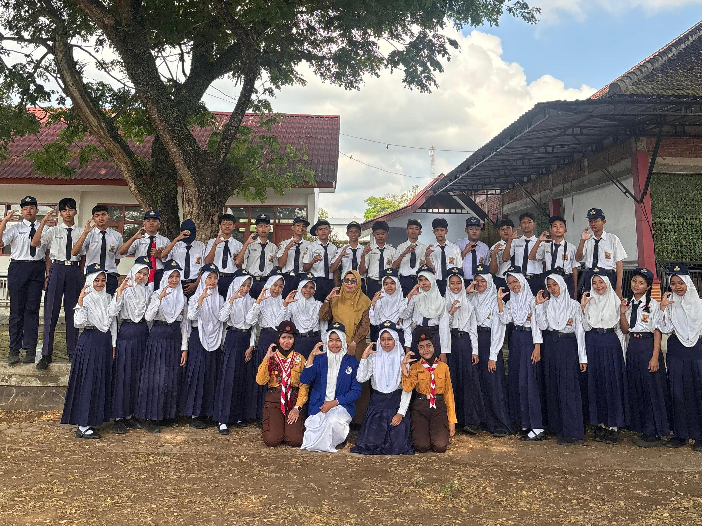
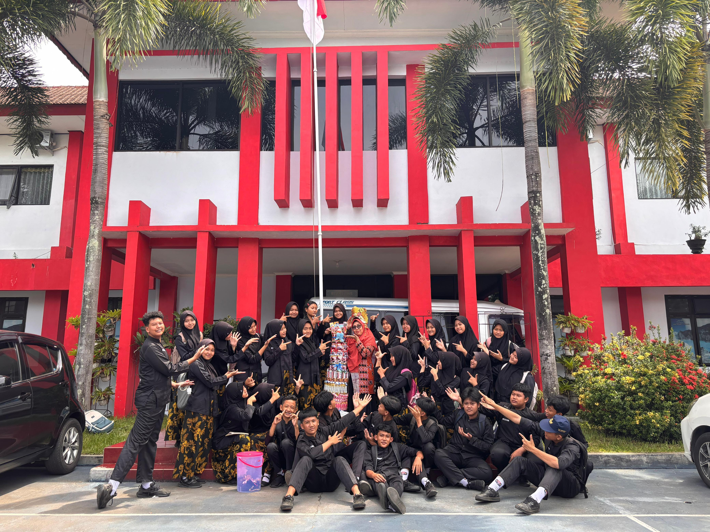
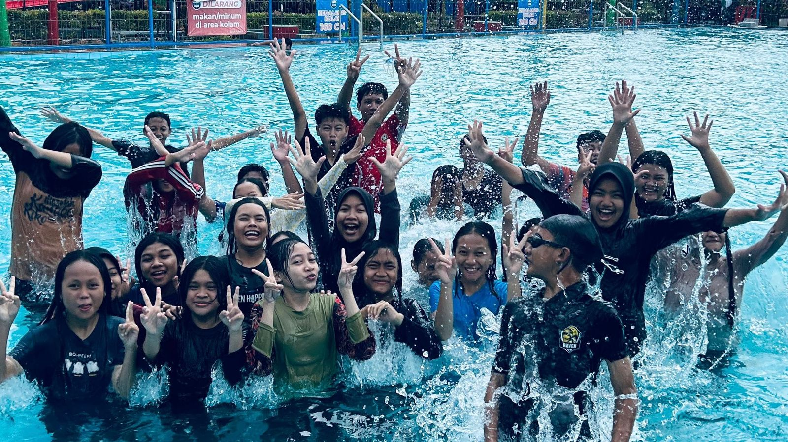
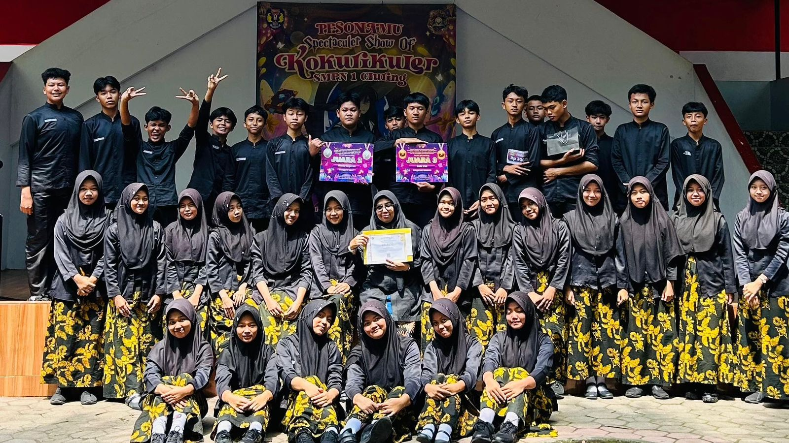

NINE CALARUNA
IX CALARUNA • Moana of Nusantara
Sejauh mata memandang, kitalah penjaga samudra dan hutan.
Para Pemimpin Pulau

Wali Kelas
Wali Kelas
Ma'am Dina Ermawati S.Pd
The Heart of Class
.jpg)
Ketua Kelas
Figo Ben Khalfalah Rahmudi
Sang Penunjuk Jalan
.jpg)
Wakil Ketua
Safira Nisa Serina Putri
Sang Penasehat
.jpg) Sekretaris 1
Sekretaris 1
Riska Wulan Aprilia
Penjaga Catatan
.jpg) Sekretaris 2
Sekretaris 2
Nizarul Troy Alamsyah
Penjaga Kedamaian
.jpg) Bendahara 1
Bendahara 1
Aina Zhivilia Azahrah
Shiny Collector
.jpg) Bendahara 2
Bendahara 2
Nabila Hasnia Zulfa
Keeper of Gold
The Crew
1. Ade Dharma Putra 🥥
2. Agustin Wulandari 🐢
3. Aina Zhivilia Azahrah 🌺
4. Alya Syifa Rodiansyah 🌊
5. Cheril Salsabila Putri 🦜
6. Christopher Dewantoro 🌴
7. Citra Dewi Anggraini 🚣
8. Daffa Putra Mahardika 🎣
9. Dhio Safa Ramadhan 🐚
10. Emirza Afdani Arafat 🌋
11. Evita Regina Putri 🌤️
12. Figo Ben Khalfalah Rahmudi 🐓
13. Hawa Thara Abidah 🐷
14. Hayden Fransisco 🦈
15. Ibrahim Zulkarnain 🌿
16. Jenar Mahesa Putra 🪵
17. Jessica Prahesti Cahyaningrum 🎋
18. Keysya Syayidatul Mukaromah 🦋
19. Marchel Dion Haerudiono 🛶
20. Mey Liana Nafisah 🦀
21. Mohammad Nihal Rafif Felix 🐟
22. Mohammad Januarta 🐋
23. Muhammad Aldrin Junatriya 💎
24. Muhammad Hafizh Al Faridzy 🏞️
25. Nabila Hasnia Zulfa 🌀
26. Nando Putra Pradana 💐
27. Nira Chezalibena Kurnia Putri 🏸
28. Nizarul Troy Alamsyah🎤
29. Nuril Sefya Anggraini🌹
30. Okta Dianita Safitri 🥊
31. Rafael Christian Ardha Rhema 🎹
32. Reyvano Adinata Utama 📚
33. Riska Wulan Aprilia 🎭
34. Safira Nisa Serina Putri 🎬
35. Sandrina Romadhona 🎸
36. Tirza Vanialarissa Nuelani 📺
37. Ula Putri Ayu Wulandari 🐘
38. Zhafirah Zahroh 🕊️
Island Memories

Upacara SERTJIAB

Hari Guru

Menjelajah Air

Classmeeting !!